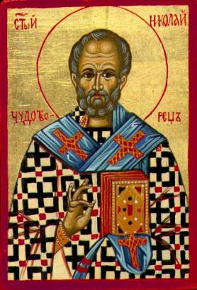

The Legend of the Jew and the Debt
A Christian finds himself in debt and persuades a
Jewish friend to make him a loan. Lacking collateral, he swears by the icon of
St. Nicholas that he will return the borrowed sum promptly, on a fixed date.
The date for repayment comes around. The Christian
borrower now has the money to repay his creditor, but he just doesn’t want to
live up to his promise. Faced with the Jewish lender’s request for payment, the
borrower swears that he owes him nothing. Apparently banking on a Jew’s
delicate standing within Christian society at that time, the Christian takes
the case to court, confident that he can convince the judge that he’s being
unjustly accused.
The clever twist within the story is the shrewd
Christian’s device of making sure that, technically, he does place the money in his creditor’s hand. The Christian brings
with him a hollow staff, in which he has put the money in gold, to lean on. And
when he has to make his oath and swear, he delivers his staff to the Jew to keep
and hold while he swears, and then swears that he has delivered to him more
than he should. And when he has made the oath, he demands his staff again of
the Jew who, knowing nothing of his ill will, delivers it to him.
The Jew, quite naturally, is angry when the court
declares him to be in the wrong; he leaves the courtroom cursing St. Nicholas,
in whose name the Christian borrower had promised prompt repayment.
St. Nicholas is not to be trifled with. When the
crooked borrower is on his way home, elated by his trick and victory, St.
Nicholas causes an irresistible fatigue to overcome him. The crooked Christian
lies down in the middle of the road and cannot be awakened from his deep sleep.
A rapidly approaching horse and wagon run over the man before the driver’s able
to bring the wagon to a halt. During the accident, the wagon’s wheels run over
the hollow staff, breaking it and spilling the borrowed money onto the road.
The trick is exposed and the Christian’s heartless scheme is found out.
The Jewish friend is called to the scene of the
accident. The judge also joins the group to discuss the deception of the
borrower. As St. Nicholas had been invoked during the transaction, all
participants feel that he has had a role in setting matters right in this dramatic
manner. The Jew acknowledges that the money inside the broken walking stick is
the exact amount borrowed from him, but he refuses to accept it while his
one-time friend is lying lifeless, broken in body, in the middle of the road.
If St. Nicholas is powerful enough to take a human
life to expose a deceitful financial claim – the Jewish creditor suggests –
then he should be able to bring his one-time friend back to life. St. Nicholas,
apparently convinced by his argument, acts quickly. Hardly has the creditor
expressed his humane and generous thoughts when the Christian comes back to
life, his wounds completely healed. He stands up and walks as if nothing has happened.
The Jew, convinced by the miracle, accepts Jesus as his Lord and Savior and is
baptized, along with his entire family.
The Legend in Art: Four scenes based on this
legend appear in the stained-glass windows of Chartres Cathedral in France. The
first shows the Jew as he hands the money over to the Christian, who lifts his
hand in solemn oath before a statue of St. Nicholas. Next, the Christian is
shown handing his hollowed-out stick to his creditor. On the third window
panel, a cart pulled by two oxen crushes the sleeping Christian and breaks his
walking stick from which gold coins roll into the street. And finally, the Jew
is baptized in the presence of two priests.
The fate of the dishonest Christian is of special
interest, for to find a Christian cast as the villain was unusual in an age
when anti-Semitism was rife. It was far more common to find the Jew depicted as
a crafty and cruel usurer.
Background on the Legend: Like so many Western
European legends of St. Nicholas, this one developed during the twelfth
century. The story was retold in many hymns of praise of St. Nicholas that
gained popularity in the thirteenth, fourteenth and fifteenth centuries in
England, France and Germany.
No doubt this story accounts for the medieval custom
of swearing by St. Nicholas, of which we have many instances. Knights preparing
for combat took an oath to him; crusaders pledged that they would proceed
without rest or delay. When Joinville attacked the Muslims, he rallied his
men-at-arms with the cry, “By St. Nicholas, they shall not remain here!” This
oath spread from France to the Netherlands. In Holland, the phrase, “I swear by
Nicholas the Saint...” became almost commonplace.
Thought to Ponder: During the Nazi occupation
of the Netherlands, Casper ten Boom devoted himself to rescuing the Jews. He
even attempted to get his own yellow Star of David to wear, so he could
identify with the Jews in their time of trouble. Although Corrie kept him from
doing so, he compensated by taking off his hat to every Jew he would meet. He
told Corrie, “I pity the poor Germans, Corrie. They have touched the apple of
God’s eye.”
He was right – and he died in the Nazi camps for
that belief. How much the Lord loves His Chosen People is beyond our
comprehension. Through the prophet Isaiah, He told them: “Can a woman forget
her baby, or disown the child of her womb? Though she might forget, I never
could forget you. See, I have engraved you on the palms of My hands. Your walls
are ever before Me.” (Isaiah 49:15-16
JPS)
Thought to Discuss around the Dinner Table: We fear what we don’t
understand. Decide that as a family, you’ll dedicate this next year to learning
as much as you can about the beliefs and traditions of your Jewish neighbors. In
addition to making new friends, you may wish to read “Living Judaism” by Rabbi
Wayne Dodick and “The Jewish Book of Why – Vol. 1 and 2,” by Alfred J. Kolatch.
Connecting Christ with Christmas Compassion
(The Legend of the Jew and the Debt)
